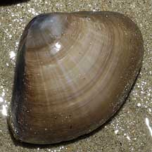
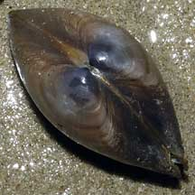
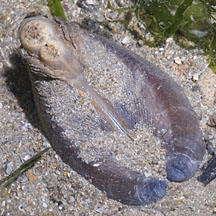
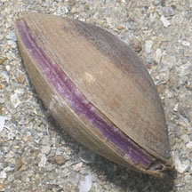
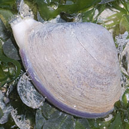
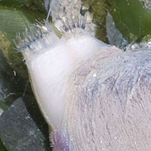
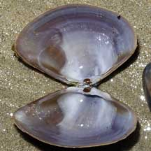

|
|
| bivalves text index | photo index |
| Phylum Mollusca > Class Bivalvia > Family Mactridae |
| Big
brown mactra clam Mactra grandis Family Mactridae updated May 2020 Where seen? This large brown clam is often seen on our Northern shores in silty and sandy areas near seagrass. Usually alone, sometimes half buried in the ground. According to Wong, it is perhaps the most commonly encountered member of the Family Mactridae in Singapore. It was previously known as Mactra mera. Features: 6-7cm. The two-part shell is thick, smooth and usually unmarked, in shades of plain brown to purplish brown. It has a short siphon and usually lies buried just beneath the surface with its siphon sticking out. Sometimes, though, an unburied individual might be encountered on the shore. |
|
 Changi, Jan 07  |
 Pulau Sekudu, May 12  |
 Changi, Aug 12  |
| The Great Escape: The clam can use its foot to leap away from predators like the Noble volute and Moon snails. |
 Changi, Jan 07 |
||
A clam using its foot to leap away
from a Noble volute. |
| Big brown mactra clams on Singapore shores |
On wildsingapore
flickr
|
| Other sightings on Singapore shores |
|
Links
References
|